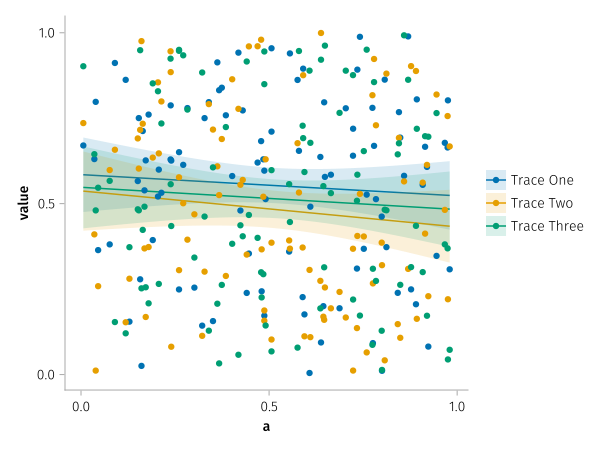
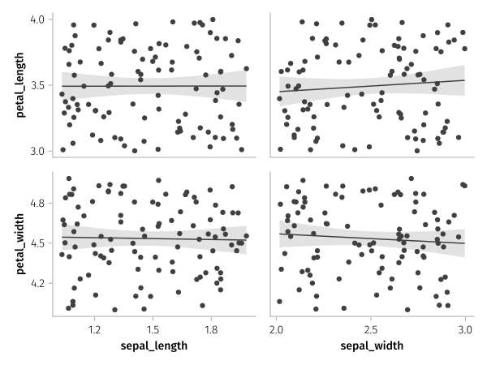
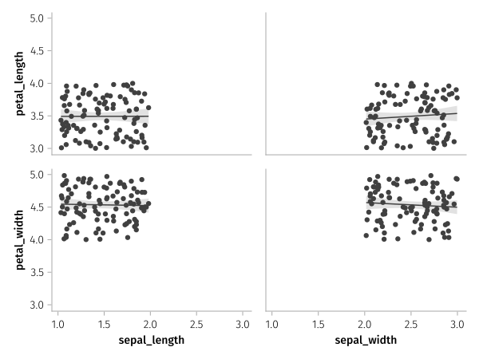
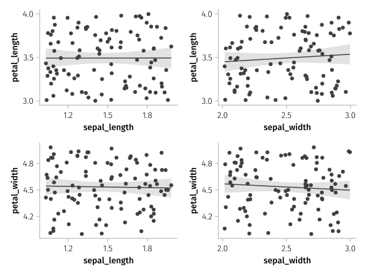

Wide data

using AlgebraOfGraphics, CairoMakie
using AlgebraOfGraphics: density
df = (a=randn(100), b=randn(100), c=randn(100))
labels = ["Trace 1", "Trace 2", "Trace 3"]
plt = data(df) *
density() *
mapping([:a, :b, :c] .=> "some label") *
mapping(color=dims(1) => renamer(labels))
draw(plt)
df = (a=rand(100), b=rand(100), c=rand(100), d=rand(100))
labels = ["Trace One", "Trace Two", "Trace Three"]
layers = linear() + visual(Scatter)
plt = data(df) * layers * mapping(1, 2:4 .=> "value", color=dims(1) => renamer(labels))
draw(plt)
The wide format is combined with broadcast semantics.
Axes are linked when they correspond to the same variable
df = (
sepal_length = 1 .+ rand(100),
sepal_width = 2 .+ rand(100),
petal_length = 3 .+ rand(100),
petal_width = 4 .+ rand(100)
)
xvars = ["sepal_length", "sepal_width"]
yvars = ["petal_length" "petal_width"]
layers = linear() + visual(Scatter)
plt = data(df) * layers * mapping(xvars, yvars, col=dims(1), row=dims(2))
draw(plt)
Axes can be fully linked or fully unlinked
draw(plt, facet = (; linkxaxes = :all, linkyaxes = :all))
fg = draw(plt, facet = (; linkxaxes = :none, linkyaxes = :none))
This page was generated using DemoCards.jl and Literate.jl.